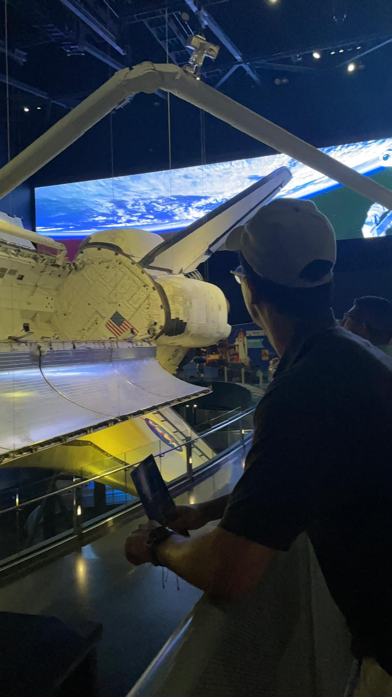

About Pelayo Suárez Rubio

I am guided by a strong moral compass, always striving to make a positive impact on others through my actions. I approach challenges with creativity and innovation. I am curious and committed to continuous learning, always expanding my knowledge and skills to better serve the current society. Therefore, to make this really happen in the profesional world, I am currently studying a major in computer engineering at UFV college.
Who I think I am
- Disciplined: Someone who struggles with discipline and focus, but wants to be disciplined.
- Aware: A person who is aware of their weaknesses, especially distractions and habits I do not like.
- Godly-man: I belive I am a man in pursuit of God, not yet perfected, but sincerely aligned.
Who I really want to be
I want to become a disciplined, God-centered man, get a major in computer engineering, and work in the United States as an engineer at Google.
My Curriculum Vitae

Universidad Francisco de Vitoria

+34 01234567890(demo)

pelayo(demo)@gmail.com
@PepS24085